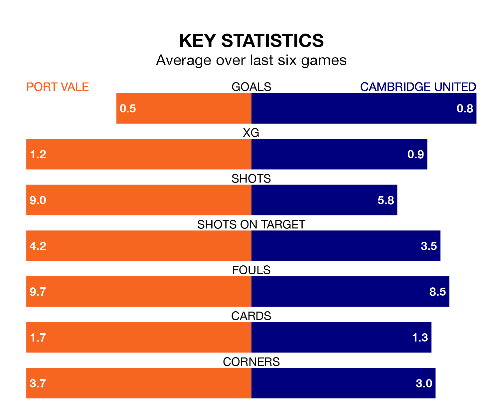

Port Vale are on a terrible run ahead of hosting Cambridge United at Vale Park on Saturday, with just one point collected from their last six games.
The Valiants have picked up just one draw in their last six EFL League One games, and face a Cambridge side whose last six games have brought one win and two draws.
Vale are 23rd in the table after 45 games, of which they have won 10 and drawn 10, earning 40 points.
Cambridge are four places ahead of the Valiants in 19th, with 12 wins and 11 draws putting them on 47 points.
In the last 10 years, Vale and Cambridge have played each other on 10 occasions. Vale won four of them, Cambridge five, and they drew once.
On average, the Valiants scored 0.9 goals and Cambridge 1.3 in those matches.
Their last meeting was on September 23, when they played out a 1-1 draw.
With 39 goals in 45 games so far this season, United are the league's joint-third-lowest scorers with 0.9 goals per game. And they are conceding more than average, letting in 61 goals at a rate of 1.4 per game.
The hosts are also below average scorers, with 0.9 goals per game, compared to a league average of 1.3. They have conceded 1.6 goals per game.
Vale's last match was on Saturday, a 2-0 loss against Bolton Wanderers.
Cambridge drew 1-1 with Wycombe Wanderers last time out, on Tuesday, with Gassan Ahadme Yahyai on the scoresheet.
Updated: 07:59 (UTC), 26/04/24